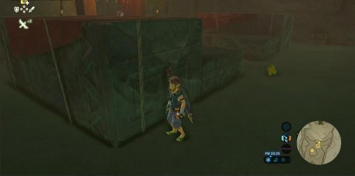
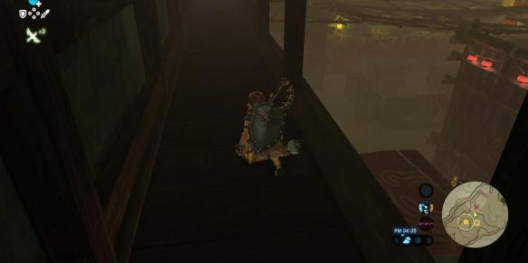
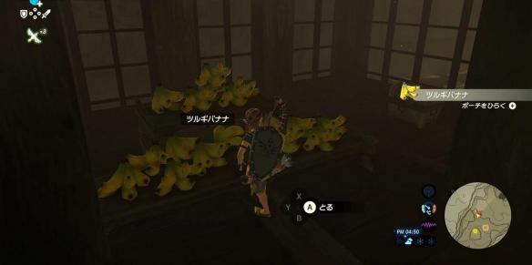
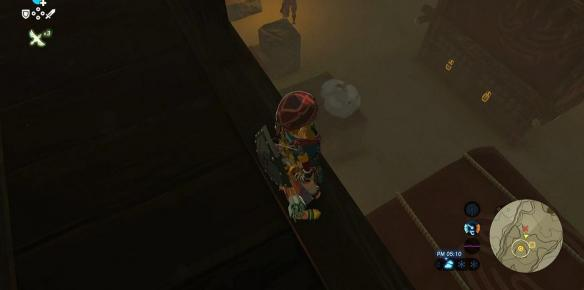
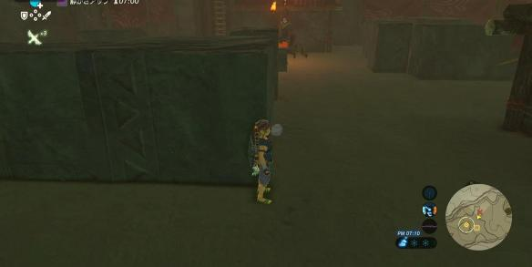
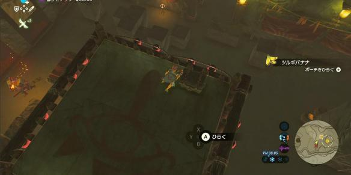

门前的守卫，扔一串香蕉，他会跑过来捡。


继续前进，来到一个较大的房间，守卫更多，潜入更复杂。
别急着进去，先走房间外的岔路，爬梯子上到二楼，从这里可以俯瞰整个房间的布局。
二楼的房间里有一堆香蕉。(看到这堆香蕉我笑了半天)

有了足够的香蕉，看清房间布局 ，下去再进行潜入作战会方便一些。
个人建议：从二楼直接飘下去，可以到更利于潜入的位置。

在一楼的场景内，还有一架梯子，可以爬上去，有宝箱，也更方便干掉剩下的敌人。

送远处的守卫一串香蕉，干掉他之后就能爬上梯子
